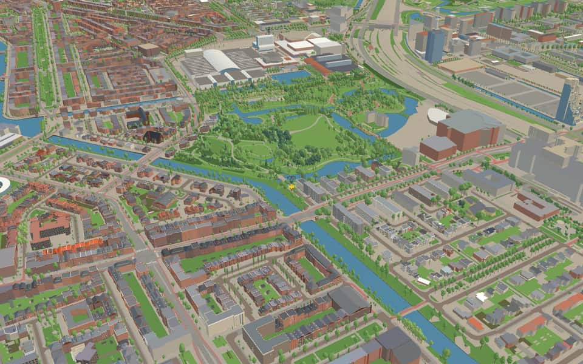
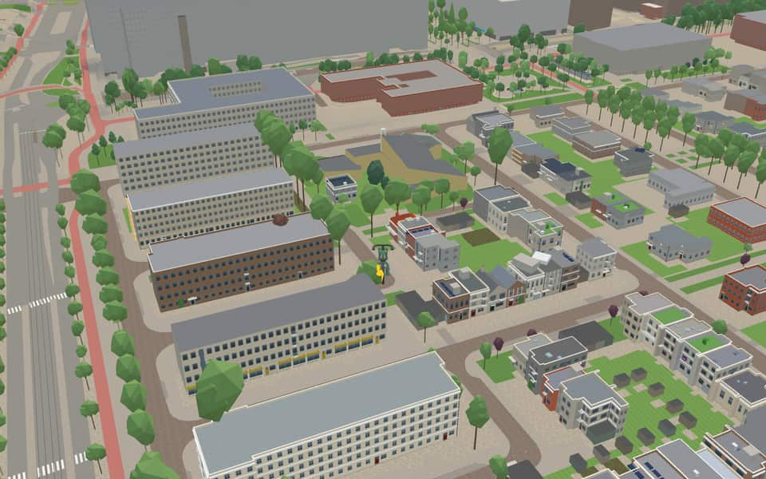
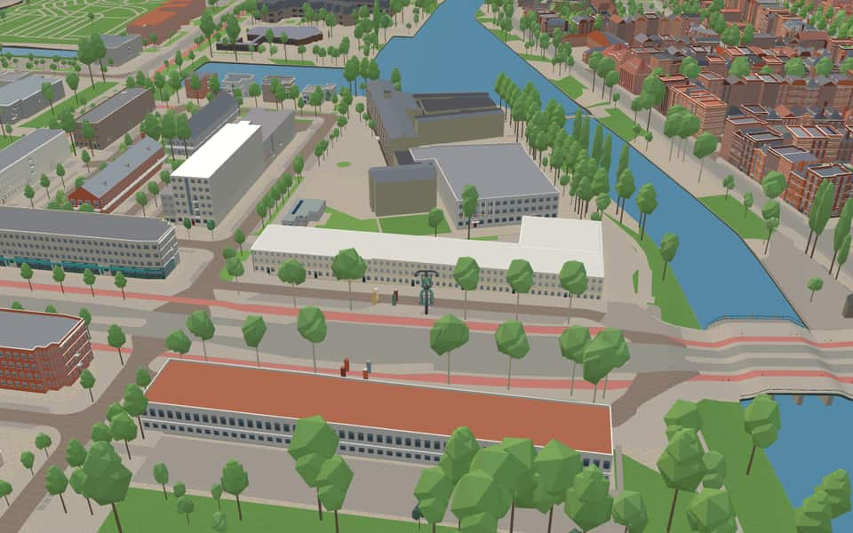
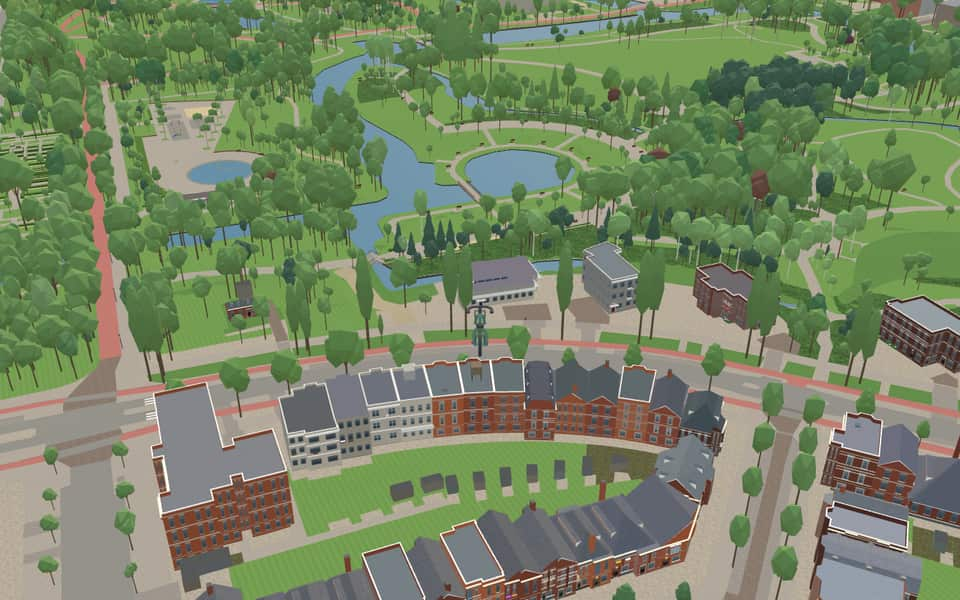

Quarter · Amsterdam
Prinses Irenebuurt e.o.
Prinses Irenebuurt is a neighbourhood in the Zuid borough; with the Beatrixpark it forms the district Prinses Irenebuurt e.o. It was built between 1954 and 1958. nl.wikipedia.org
The name. Named after the Prinses Irenestraat, which runs east–west through it and was named in 1953 after Princess Irene, daughter of Queen Juliana. nl.wikipedia.org


In the game
Frames from a ride through Prinses Irenebuurt e.o..




6 more photos of Prinses Irenebuurt e.o.


.jpg){kind=link}

.jpg){kind=link}

.jpg){kind=link}


Built here
Buildings modelled one by one for the ride.
Thomaskerk
Spinoza Lyceum, Peter van Anrooystraat 8, Amsterdam (built 1957)
A white concrete-frame school, four-storey south-east wing with orange timber window panels under awnings over a low band of grid windows, a stair and canopy entrance, and a three-storey west wing of eleven timber-framed bays
Did you know
Trivia the ride can show you here.
- The Warnersblokken are known for coloured facade panels whose colours were composed by the artist Joseph Ongenae. Wikipedia (translated from Dutch)
- The four Warnersblokken on the Dirk Schäferstraat and Johannes Worpstraat are housing blocks of 1957 by Allert Warners. Wikipedia (translated from Dutch)
- It is the southernmost part of the 1917 Plan Zuid, but was never built in that form. Wikipedia (translated from Dutch)
- The Thomaskerk's 1967 crucifixion window by Antonio Saura was paid for by the church's architect himself. Wikipedia (translated from Dutch)
- The Joep Langebrug honours the AIDS expert Joep Lange, who lived nearby and died in the MH17 disaster in 2014. Wikipedia (translated from Dutch)
- ThomaskerkArchitect Karel Sijmons personally funded the 1967 crucifixion stained glass by Antonio Saura. nl.wikipedia.org
- ThomaskerkOriginally built for wealthy residents in fur coats, it now serves as a resting spot for business workers. nl.wikipedia.org
- Aron Wolff BerlijnbrugAlthough its number dates to the 1930s, this bridge was actually built in 1964. nl.wikipedia.org
- Aron Wolff BerlijnbrugThe pier suffered severe damage during World War II, requiring major repairs combined with restoration of other Amsterdam bridges. nl.wikipedia.org
- Aron Wolff BerlijnbrugOriginal plans included a sluice gate, guardhouse, and access path constructed after dredging work in the Beatrixpark. nl.wikipedia.org
- Aron Wolff BerlijnbrugConstruction began in January 1939 and was completed by the end of April that same year. nl.wikipedia.org
- Gustav LeonhardtbrugGustav Leonhardtbrug received its official name in 2016 after living for years simply as bridge 449. nl.wikipedia.org
- Gustav LeonhardtbrugConstruction began in January 1962 following a tender the previous October. nl.wikipedia.org
- Henriëtte van Heukelom-van den BrandelerbrugBefore its 2016 naming, the structure existed simply as unnamed bridge number 496. nl.wikipedia.org
16 more facts
- Henriëtte van Heukelom-van den BrandelerbrugDark brown armrests made of tropical hardwood sit atop wooden platforms with planks. nl.wikipedia.org
- Joep LangebrugThe namesake Joep Lange died in the 2014 MH17 crash while living near this location. nl.wikipedia.org
- Joep LangebrugBefore 2016, this structure was officially known as the Beethoven Bridge. nl.wikipedia.org
- Joep LangebrugHildo Kropp carved Norwegian granite images while the bridge was being finished. nl.wikipedia.org
- Johnny & JonesbrugConstruction likely occurred around 1970 or 1971, possibly to support the Floriade festival held in 1972. nl.wikipedia.org
- Zuider AmstelkanaalThe canal is absent from postcode books because its quays and streets have mismatched names. nl.wikipedia.org
- Zuider AmstelkanaalTram lines 5 and 24 cross the canal on two of its eight bridges. nl.wikipedia.org
- BeethovenstraatTrendy restaurants and bars have opened here in increasing numbers since the coronavirus crisis. nl.wikipedia.org
- BeethovenstraatBridge 417 allowed the street to cross the Zuider Amstel Canal in 1939 or 1940. nl.wikipedia.org
- BeethovenstraatActress Fien de la Mar lived here before jumping from a two-meter window in 1965. nl.wikipedia.org
- DiepenbrockstraatA clairvoyant prophet lived here from the 1980s until her death, having established a chapel dedicated to the Virgin of all Peoples. nl.wikipedia.org
- ParnassuswegIn the 1950s, the road was extended toward Buitenveldert to reach the A10 ring road. nl.wikipedia.org
- ParnassuswegSince 1972, the road has been raised to create a highway-like appearance with lower paths for cyclists and pedestrians. nl.wikipedia.org
- ParnassuswegTram line 5 began operating on the southern section of the street in 2008. nl.wikipedia.org
- Prinses IrenestraatA former school building on the site was demolished in 2013 to make way for offices. nl.wikipedia.org
- Prinses IrenestraatA pentagonal playground near the street is locally nicknamed the Pentagon. nl.wikipedia.org
Names on the map
Where the canal, bridge and street names come from.
Canals and water
- Zuider AmstelkanaalThe southern part of the Amstelkanaal, referring to the river Amstel.
1 other canal without a recorded story
RAI-haven
Bridges
- Aron Wolff BerlijnbrugComposer and conductor (1817-1870). He wrote more than two hundred works, including at least twenty large romantic ballets for the Stadschouwburg, where he was orchestra master from 1846.Bridge 431: a brick bridge for pedestrians, dated 1964 in the city's bridge register.
- Gustav LeonhardtbrugBridge 449: a wooden bridge for pedestrians, dated 1962 in the city's bridge register.
- Henriëtte van Heukelom-van den BrandelerbrugHendrika Jacoba van den Brandeler-Heukelom (1884-1985), composer and pianist, a pupil of Dirk Schäfer (1873-1931) among others. Her works include songs, a requiem for her father, and a Stabat Mater performed by the Concertgebouw Orchestra in 1913.Bridge 496: a wooden bridge for pedestrians, dated 1971 in the city's bridge register.
- Ina BoekbinderbrugIna Boekbinder (Assen, 1915 - Hilversum, 1987) was a Jewish resistance fighter in the Second World War. She helped Jewish children go into hiding and delivered ration coupons to people in hiding. She also carried Sten guns in her bicycle bags and raided a bandage depot.Bridge 416: a reinforced concrete bridge for cyclists, dated 1956 in the city's bridge register.
- Joep LangebrugJoep Lange was a professor of infectious diseases and an AIDS expert, one of the most influential AIDS scientists in the world. He was killed on 17 July 2014 in the MH17 air disaster.Bridge 417: a steel bridge for road traffic, dated 1940 in the city's bridge register.
- Johnny & JonesbrugJohnny & Jones was an Amsterdam jazz duo, in which Nol van Wesel (1918-1945) was Johnny and Max Kannewasser (1916-1945) Jones. Because they were Jewish they were interned in the Westerbork transit camp in 1943. Even so they managed to return briefly to Amsterdam to make some recordings, including the 'Westerbork Serenade'. On 4 September they were put on a transport to Germany, where they died of exhaustion in the Bergen-Belsen concentration camp shortly before the liberation. Their most famous song was 'Meneer Dinges, weet niet wat swing is' (Mr Thingummy doesn't know what swing is).Bridge 433: a wooden bridge for pedestrians, dated 1971 in the city's bridge register.
Streets
- Anton VerheijstraatMusician (1871-1924), pianist, organist and conductor. He composed mainly music for male choirs.
- BeethovenpleinLudwig van Beethoven (1770-1827), German composer and grand master of instrumental music. His works include 9 symphonies, 32 piano sonatas, 11 overtures and 17 string quartets.
- BeethovenstraatLudwig van Beethoven (1770-1827), German composer and grand master of instrumental music. His works include 9 symphonies, 32 piano sonatas, 11 overtures and 17 string quartets.
- BoerenweteringpadThe name of the watercourse that originally ran from the Kalfjeslaan to what is now the Koningsplein. It was formerly also called the Oude Wetering, as opposed to the Nieuwe Wetering (Kostverlorenvaart). The Weteringbuurt and the Weteringschans take their names from this wetering (drainage canal).
- Brandts BuysstraatJan Willem Frans Brandts Buys (1868-1939), musician, who settled in Austria in 1893. He composed operas, piano concertos and orchestral music.
- Catharina van RennesstraatComposer, singer and teacher (1858-1940). Her great contribution was to children's songs. She set many texts by Guido Gezelle to music and wrote, among others, the music for 'Drie kleine kleutertjes' and 'Kinderen van een Vader'. She founded singing schools in several towns.
- Cornelis DopperkadeComposer (1870-1939), opera conductor, later second conductor of the Concertgebouw Orchestra. He composed eight symphonies and several operas.
- DiepenbrockstraatAlphonsus Joannes Maria Diepenbrock (1862-1921), a composer of international standing who wrote mainly church music.
- Dina AppeldoornstraatChristina Adriana Arendina Koudijs, née Van Appeldoorn (1884-1938), composer of chamber music and symphonic poems. She also composed Dutch dances and a suite for orchestra.
- Dirk SchäferstraatComposer and pianist (1873-1931), a great interpreter of Chopin.
- Evert CornelisstraatConductor and pianist (1884-1931). Second conductor of the Concertgebouw Orchestra from 1910 to 1919, then conductor of the Utrecht City Orchestra.
- Fred. RoeskestraatFrederik J. Roeske (1868-1961), conductor of the Royal Male Choir Apollo from 1891 to 1953, and also composer of music for a great many songs. Before it got this name, the street was part of the Prinses Irenestraat.
13 more streets with a story
- Henri ZagwijnstraatComposer (1878-1954) of chamber music and choral works.
- Henriëtte BosmansstraatPianist and composer (1895-1952), who composed songs, mostly to French texts, and performed as a pianist at home and abroad.
- Herman HeijermanswegJournalist, novelist and playwright (1864-1924). He wrote many novels set in Amsterdam, some under the pseudonym Samuel Falkland. His great success was the play 'Op hoop van zegen' (The Good Hope).
- Johannes WorpstraatOrganist and composer (1821-1891), author of the textbook 'Muziekleer' (music theory).
- MinervalaanIn Roman mythology, the goddess of wisdom (Minerva).
- ParnassuswegA mountain in Greece, in Greek mythology the home of Apollo and the Muses. Today used figuratively for the realm of poetry.
- Peter van AnrooystraatConductor and composer (1879-1954), who conducted several orchestras and is known as a composer for his Piet Hein Rhapsody. A pioneer of youth concerts.
- Prinses IrenestraatIrene Emma Elisabeth, second daughter of Princess Juliana and Prince Bernhard, born 5 August 1939. In 1964 in Rome she married the French nobleman Prince Carlos Hugo of Bourbon-Parma. For traffic reasons the western part of the Prinses Irenestraat was renamed Fred. Roeskestraat by council decision of 27 April 1977.
- Prinses MargrietstraatMargriet Francisca, Princess of the Netherlands, born in Canada in 1943, third daughter of Princess Juliana and Prince Bernhard, who married Pieter van Vollenhoven in 1967.
- Prinses MarijkestraatMaria Christina, Princess of the Netherlands, born 1947, fourth daughter of Princess Juliana and Prince Bernhard. She was first called Princess Marijke, but has called herself Princess Christina since 1967.
- Willem KesstraatMusician (1856-1934), first conductor of the Concertgebouw Orchestra, founded in 1888, succeeded by Willem Mengelberg in 1895.
- Willem LandréstraatGuillaume Louis Frédéric Landré (1874-1948), composer of operas and symphonies and for many years music critic for several dailies. His son Guillaume (1905-1968) was also a composer.
- Willem PijperstraatComposer (1894-1947), teacher at the conservatories of Amsterdam and Rotterdam, influenced as a composer by the French impressionists Franck and Debussy and by Mahler. Pijper wrote symphonies, choral works and incidental music, among other things.